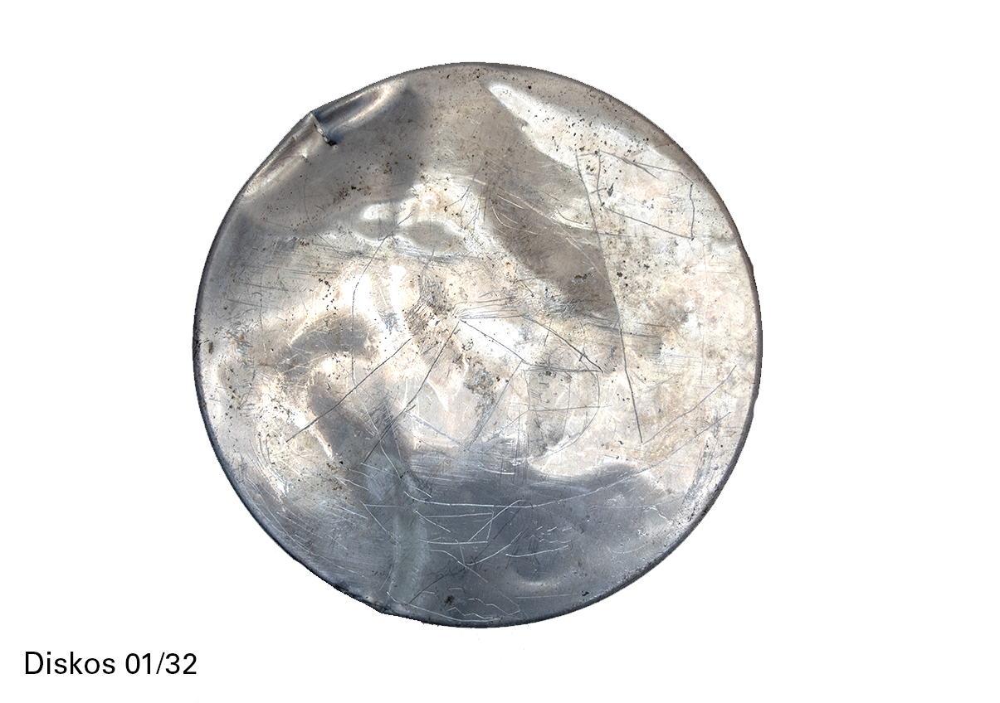
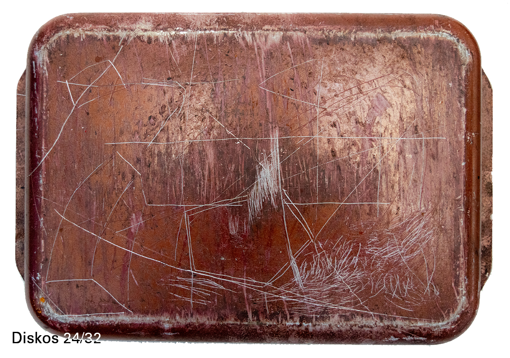

about me
Welcome to my site. I am a young designer and artist who studied at the Design Academy Eindhoven. Through my work, I share my bizarre observations of the bizarre world, or how it could be. I’m often concerned with history, culture and industry, turning towards romanticism, the absurd and the whimsical. I like to make exhibitions, images and public situations, coming to that from a design perspective, to bypass the sticky art discourse and work within the real world. I act accross mediums, though often with sculpture, video, performance and writing. Please take a look at my work and do get in touch if you feel to do so!
project 1→
While in Athens 2019/20 as part of an art group, I collected aluminium disks and trays from scrap yards. I was scratching into this soft metal which recorded a trace. In these muscular acts, I was diarising my subconscious, plotting place and feeling as I received stimuli and experimented with my partners how to run our collective education, how to use our agency well and where to find beauty. My psyche interacted with material which also found itself in this place with its own memories.
project 2 →
While in Athens 2019/20 as part of an art group, I collected aluminium disks and trays from scrap yards. I was scratching into this soft metal which recorded a trace. In these muscular acts, I was diarising my subconscious, plotting place and feeling as I received stimuli and experimented with my partners how to run our collective education, how to use our agency well and where to find beauty. My psyche interacted with material which also found itself in this place with its own memories.
